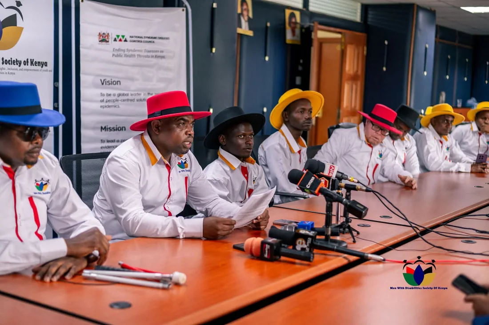
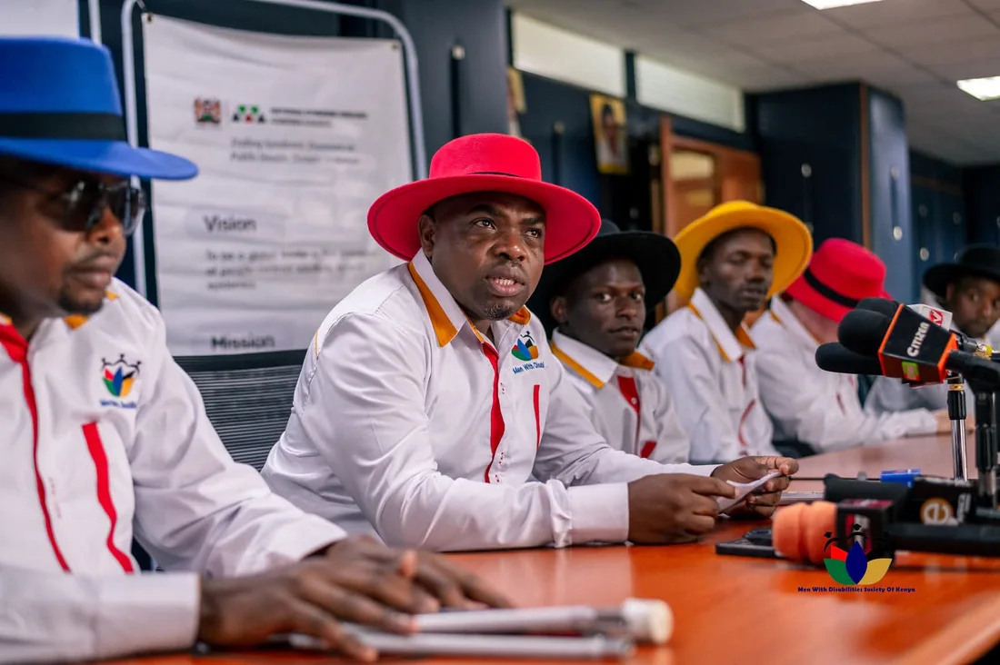
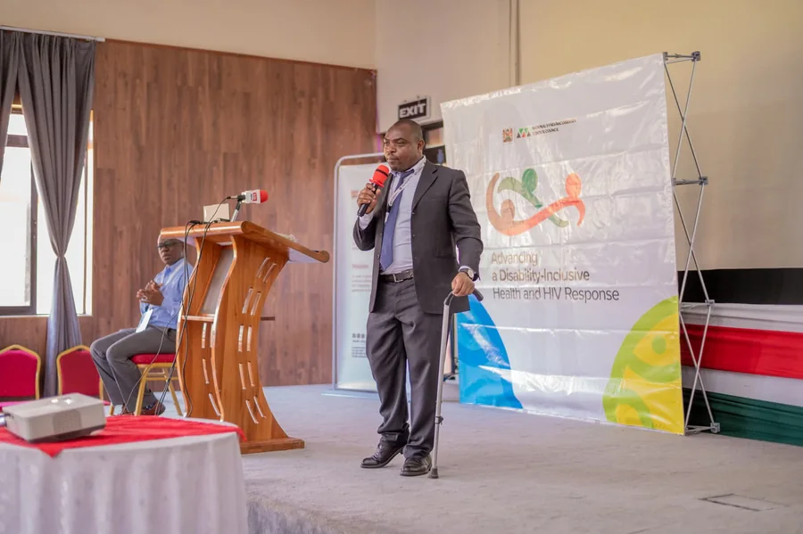
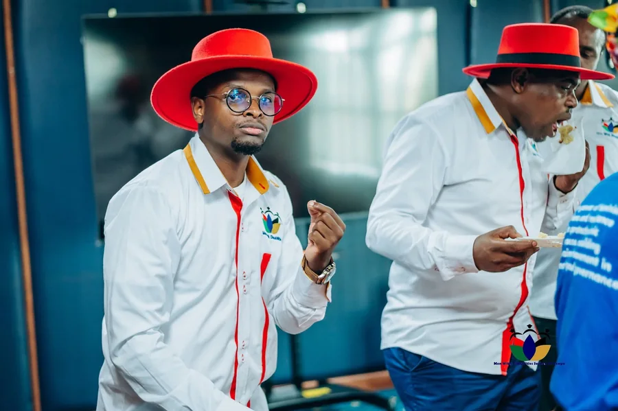
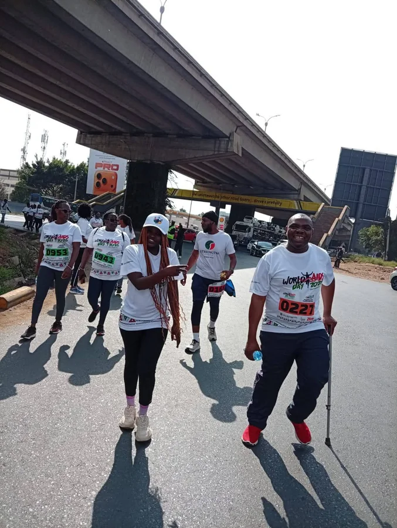
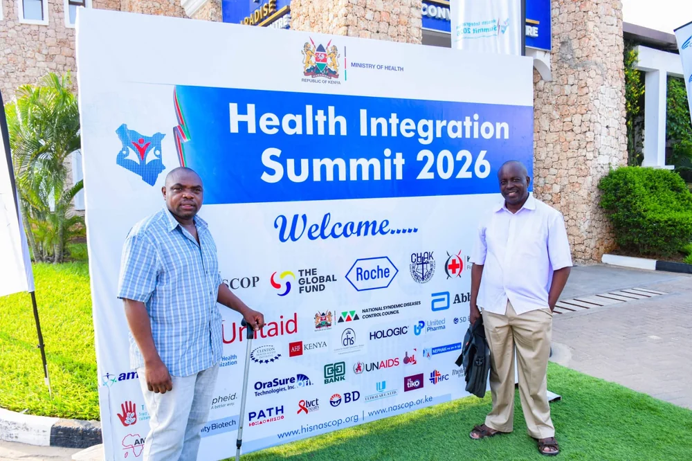
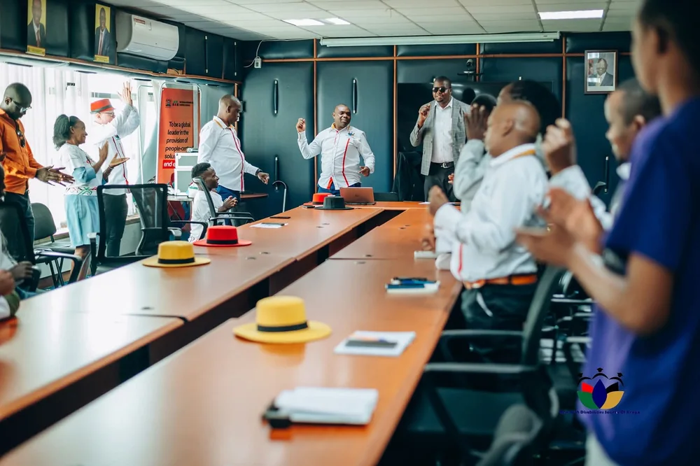

Proof belongs in public view.
MDSK's media presence is not decoration. It shows members in advocacy rooms, public health forums, press engagements, partner spaces, and street-level inclusion work across Kenya.
The work becomes harder to ignore when people can see it.
Media gives MDSK a public record: who was in the room, which systems were engaged, what access looked like, and how disability inclusion moved from private struggle into civic conversation.
The strongest images are documentary rather than promotional. They show meetings, microphones, KSL interpretation, public health advocacy, members in red hats, and partner spaces where decisions are shaped.
Rooms, streets, microphones, and access.






Publish video only when the access layer is ready.
Video can make MDSK feel immediate, but speech-heavy clips need captions or transcripts. Where Kenyan Sign Language is part of the event, that visibility should be preserved rather than cropped away.
- Caption or transcriptAny public clip with speech should have a text alternative before it becomes central content.
- Consent and dignityAvoid vulnerable close-ups unless MDSK has explicit permission and the context is respectful.
- PerformanceUse compressed clips, posters, and user-initiated playback rather than heavy autoplay.